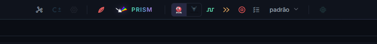
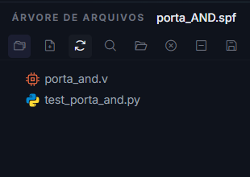

Simular com Icarus, Verilator ou cocotb¶
Uma simulação executa o circuito em um ambiente de teste e compara seu comportamento com o resultado esperado. Nesta página, você aprenderá a preparar o projeto, escolher o simulador e reconhecer quando o teste realmente foi concluído.
Preparar a simulação¶
Antes de clicar em Analisar Verilog (forma de onda) ou Execução rápida:
Selecione as fontes Verilog do projeto.
Defina o Top Level.
Defina o Testbench Top.
Salve os arquivos.
Selecione Icarus ou Verilator na barra superior quando o fluxo depender dessa opção.
O Top Level identifica o circuito; o Testbench Top identifica o teste. Antes de continuar, confira os dois nomes na barra de status e verifique se o testbench referencia sinais que existem na versão atual do RTL.
{kind=link}

Os logotipos selecionam o simulador usado pela análise de forma de onda e por testbenches cocotb. O ícone de onda executa Analisar Verilog (forma de onda), os dois chevrons executam Execução rápida e a lista abre a configuração dos sinais.¶
Escolher o simulador¶
Opção |
Indicação |
Característica principal |
Atenção |
|---|---|---|---|
Icarus Verilog |
Primeira execução, testes curtos e investigação de sinais |
Simula diretamente o HDL e oferece boa compatibilidade com testbenches Verilog tradicionais |
Pode ser mais lento em testes extensos |
Verilator |
Simulações longas ou projetos maiores |
Compila o modelo para obter maior desempenho |
Nem toda construção de testbench aceita pelo Icarus é compatível |
cocotb |
Testes automatizados escritos em Python |
Oferece corrotinas, asserções e acesso às portas do circuito |
Não é um terceiro simulador: usa Icarus ou Verilator como backend |
Comece com Icarus para validar a estrutura básica e observar sinais. Troque para Verilator quando a duração ou o tamanho do projeto exigir mais desempenho. Escolha cocotb quando o teste se beneficiar de Python, automação e asserções legíveis, selecionando antes o backend desejado na barra superior.
A Execução rápida com testbench Verilog exige Verilator. Com testbench .py, a AURORA executa cocotb em modo headless usando Icarus ou Verilator, conforme a seleção. Como os backends não aceitam necessariamente as mesmas construções, avalie uma falha pelo terminal da opção selecionada.
Análise de forma de onda ou execução rápida¶
- Analisar Verilog (forma de onda)
Executa o testbench, gera formas de onda e abre o viewer selecionado.
- Execução rápida
Executa sem abrir viewer de ondas. Com testbench Verilog, usa Verilator em modo headless. Com testbench
.py, executa cocotb em modo headless com o backend selecionado.
Use Analisar Verilog (forma de onda) quando precisar observar a evolução dos sinais. Use Execução rápida para testes automatizados, mensagens no terminal ou verificações que já possuem assert e não dependem de inspeção visual.
Testbench Verilog¶
Selecione um arquivo .v como Testbench Top. O testbench deve:
Instanciar o módulo testado.
Gerar clock e reset quando necessários.
Aplicar estímulos.
Encerrar a execução.
Produzir dump de sinais ou permitir que a AURORA o configure.
O teste deve possuir uma condição clara de encerramento. Um testbench que gera clock indefinidamente e nunca chama sua condição de término continuará executando até ser cancelado.
O exemplo abaixo testa uma porta AND. O módulo do circuito deve ser adicionado como fonte sintetizável e definido como Top Level.
1module porta_and (
2 input wire a,
3 input wire b,
4 output wire y
5);
6 assign y = a & b;
7endmodule
O arquivo seguinte deve ser adicionado como testbench e definido como Testbench Top.
1`timescale 1ns/1ps
2
3module tb_porta_and;
4 reg a;
5 reg b;
6 wire y;
7
8 porta_and dut (
9 .a(a),
10 .b(b),
11 .y(y)
12 );
13
14 task verificar;
15 input valor_a;
16 input valor_b;
17 input esperado;
18 begin
19 a = valor_a;
20 b = valor_b;
21 #1;
22
23 if (y !== esperado) begin
24 $display(
25 "ERRO: a=%0b b=%0b esperado=%0b obtido=%0b",
26 a, b, esperado, y
27 );
28 $fatal(1);
29 end
30 end
31 endtask
32
33 initial begin
34 $dumpfile("tb_porta_and.vcd");
35 $dumpvars(0, tb_porta_and);
36
37 verificar(1'b0, 1'b0, 1'b0);
38 verificar(1'b0, 1'b1, 1'b0);
39 verificar(1'b1, 1'b0, 1'b0);
40 verificar(1'b1, 1'b1, 1'b1);
41
42 $display("SUCESSO: tabela verdade validada.");
43 $finish;
44 end
45endmodule
O testbench instancia o circuito com o nome dut, aplica os quatro casos da tabela-verdade e compara cada saída. Quando um valor está incorreto, $fatal(1) interrompe a simulação como falha. Quando todos os casos passam, $finish encerra normalmente. As chamadas $dumpfile e $dumpvars criam o registro usado na visualização das formas de onda.
Testbench cocotb¶
Selecione um arquivo .py como Testbench Top. A AURORA usa o ambiente Python incluído na toolchain; você não precisa configurar o Python global do Windows.
{kind=link}

No projeto porta_AND, o testbench test_porta_and.py aparece na mesma árvore da fonte porta_and.v e é identificado pelo ícone Python.¶
O mesmo circuito pode ser verificado com o testbench cocotb abaixo:
1# aurora-toplevel: porta_and
2
3import cocotb
4from cocotb.triggers import Timer
5
6
7async def verificar(dut, valor_a, valor_b, esperado):
8 dut.a.value = valor_a
9 dut.b.value = valor_b
10 await Timer(1, unit="ns")
11
12 obtido = int(dut.y.value)
13 assert obtido == esperado, (
14 f"a={valor_a} b={valor_b}: esperado={esperado}, obtido={obtido}"
15 )
16
17
18@cocotb.test()
19async def testa_tabela_verdade(dut):
20 casos = [
21 (0, 0, 0),
22 (0, 1, 0),
23 (1, 0, 0),
24 (1, 1, 1),
25 ]
26
27 for valor_a, valor_b, esperado in casos:
28 await verificar(dut, valor_a, valor_b, esperado)
O exemplo apresenta as partes essenciais de um teste cocotb:
A diretiva
# aurora-toplevel: porta_andinforma explicitamente qual módulo Verilog será elaborado como DUT.O decorador
@cocotb.test()registra a corrotina como um teste executável.O parâmetro
dutrepresenta o módulo Verilog e expõe suas portas pelos nomesa,bey.Timer(1, unit="ns")permite que a lógica combinacional atualize a saída antes da leitura.A asserção compara resultado esperado e resultado obtido e inclui o caso completo na mensagem de erro.
Mantenha o nome do arquivo Python compatível com um módulo Python, por exemplo, test_porta_and.py. Evite espaços, hífens e caracteres especiais. Se um sinal não existir com o nome usado no código, o teste falhará antes de concluir as verificações.
Para circuitos com clock, use Clock, aguarde RisingEdge e leia os sinais após ReadOnly. A galeria apresenta esse padrão em um contador e também mostra como testar o Verilog gerado por algoritmos C±.
Consulte Galeria de projetos e testbenches para baixar todos os arquivos e comparar testbenches .v e .py equivalentes.
Confirmar o resultado¶
A simulação está correta quando:
O terminal termina sem erro.
O testbench alcança o final esperado.
As verificações do teste passam.
Analisar Verilog (forma de onda) abre o arquivo de onda correto.
Uma execução sem mensagens de erro não é suficiente quando o testbench deveria verificar valores. Confirme que as asserções foram alcançadas, que o tempo simulado avançou e que a mensagem final corresponde ao teste executado.
Problemas comuns¶
- Módulo principal não encontrado
Revise Top Level e arquivos selecionados.
- Testbench não inicia
Confirme Testbench Top, clock, reset e nome do módulo.
- O cocotb não encontra o teste
Confirme o arquivo
.py, o nome da função decorada e os sinais usados.- Verilator falha, mas Icarus funciona
O projeto pode usar uma construção não aceita pelo Verilator. Leia a primeira mensagem de erro no terminal.
- Nenhuma forma de onda foi criada